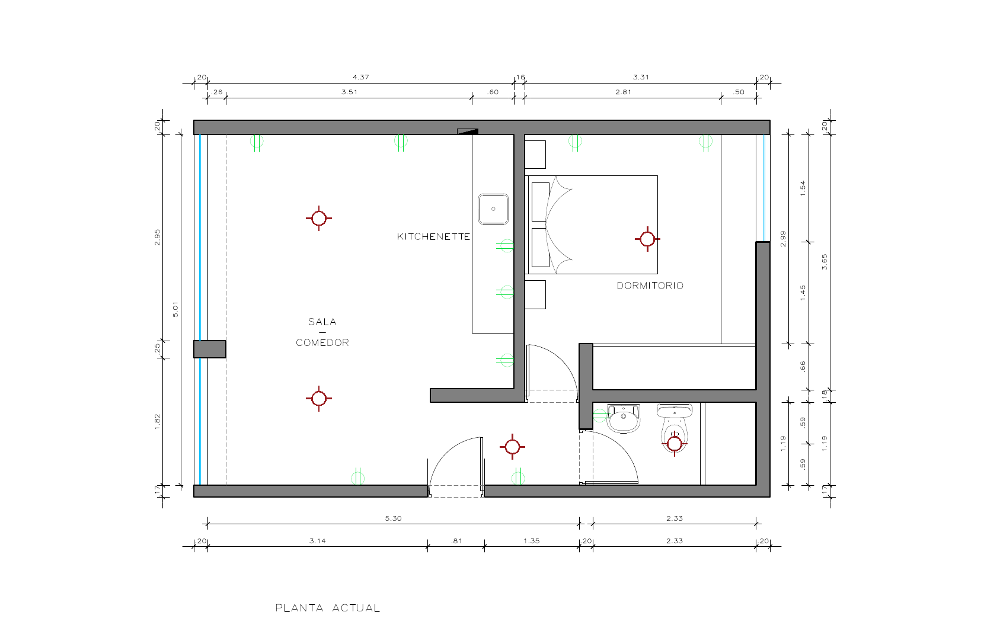
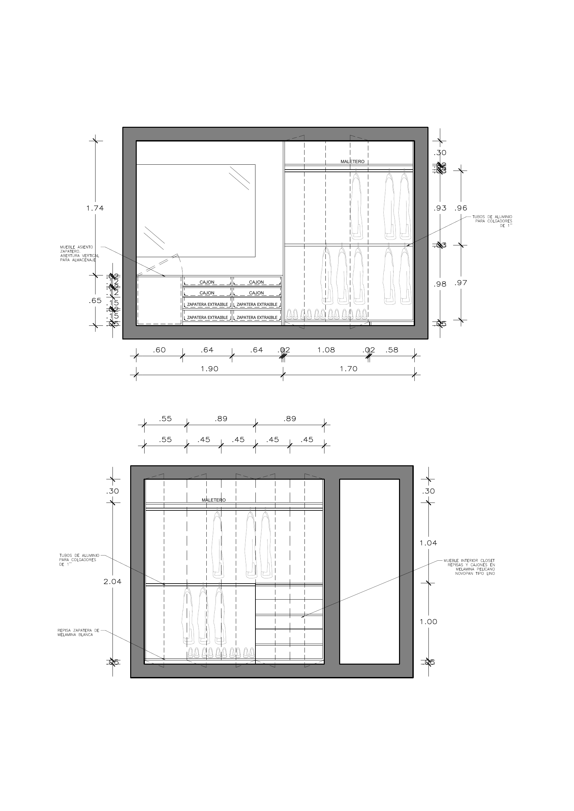
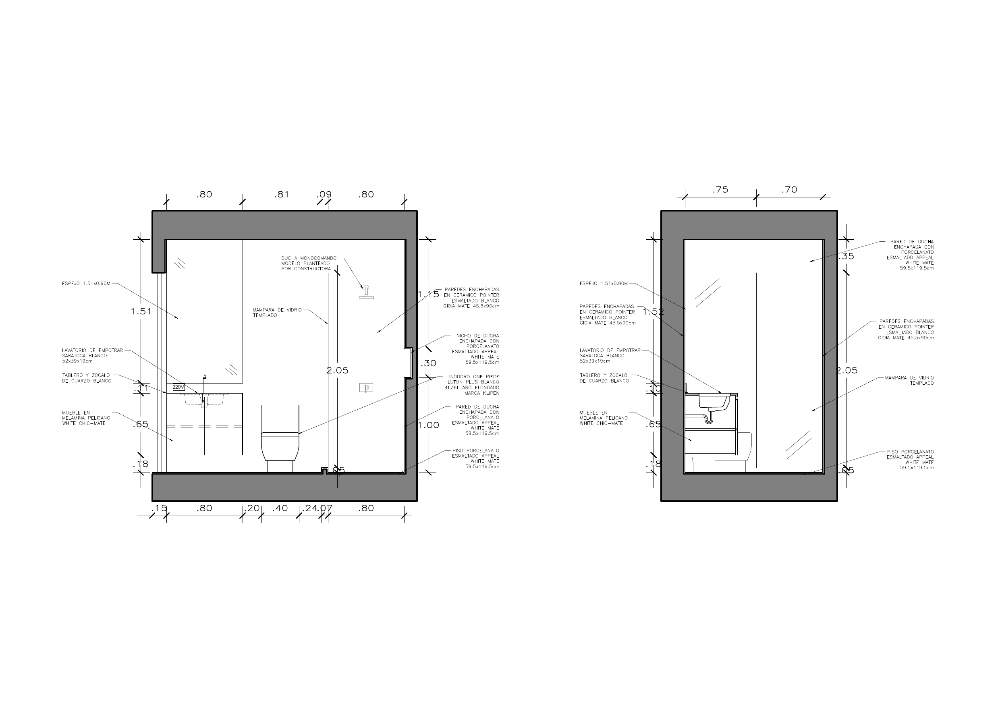

03 · Proyecto residencial
DPTO U
Remodelación integral de un departamento existente — reorganización de planta, carpintería a medida y selección de materiales con foco en calidez y funcionalidad.

Sobre el proyecto
Remodelación integral de un departamento existente. El proyecto se basó en una reorganización de planta para integrar la cocina, el comedor y la sala en un solo ambiente luminoso. Se priorizó la calidez de los materiales — madera natural, revestimientos blancos mate y acentos metálicos negros — y la incorporación de carpintería a medida para optimizar el almacenamiento.
El trabajo abarcó desde el levantamiento del estado original, el diseño de la nueva distribución, la elaboración de planos técnicos y especificaciones, hasta la supervisión de obra y entrega final.
Renders del proyecto


Obra terminada


Planos técnicos



